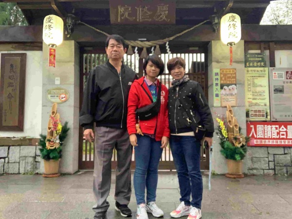
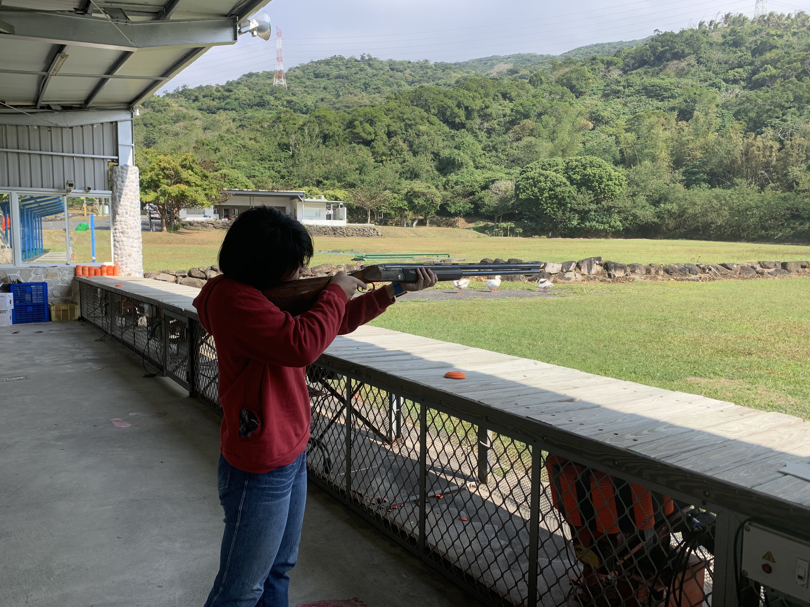

家庭&成長過程
我叫黃郁珊，來自台中一個普通再不過的小康家庭，父母晚婚所以我是家裡的獨生女，從小就在父母全心全意的愛下長大，但也因為是家裡的獨苗，在一人獨享所有愛和資源的同時也承受了所有望子成龍、望女成鳳的壓力。
國小時放學就要去各式各樣的補習班和才藝班，為的是考上私立國中，進了私立國中後，雖然身在數語資優班，但其實我的數學沒有其他人那麼優秀，因此常常處於落後甚至墊底，我開始對讀書厭煩，在那段時間，我把所有的重心都寄託在社團上，想當然爾，就是個惡性循環，我的成績每況愈下，但我漸漸感受到只有音樂能讓我真正的快樂。
雖然不是什麼音樂世家，但父母十分喜歡唱歌，我也就在耳濡目染下長大，後來父母送我去學鋼琴，在多次的公演後，我發現我深深的愛上舞台，在逐漸狹窄的路上我努力練習，把握上台的每個機會。
家裡支持我把藝術當興趣，但是希望我過個平凡順遂的人生，高中就讀的是三類組，因此家裡希望我將來考個藥師或公務員，但我流著不羈愛自由的血液，一心想往演藝事業發展，在與家人協調後，達成課業與表演兼顧的共識，也算是為自己留條後路。但在蠟燭多頭燒的狀況下，我還是讓功課方面疏漏了，家裡也因此鬧的不愉快，冷戰了好一陣子，長輩說這是叛逆期對世界的反抗，但我認為這是對所嚮往的還有所期待，願意放手一搏。
最終，一切的結果都反映在學測成績上，我考出了自己的新低，幾乎所有三類科系都無法填報，那時我心想，或許這是老天給我的一個機會，去做我真正最喜歡的，我喜歡生物，但我最最喜歡的一直都是音樂，是舞台，是藝術。也就這樣兜兜轉轉，一顆原子彈將戰爭的殘垣斷壁夷為平地，一切從頭開始，復原期總是又痛又漫長，但我相信一切都會慢慢變好的，而現在的我微笑著應證了這句話，都會好的。